Philosophy
Machines influence our behavior and decisions. What if they could motivate us towards our highest ideals?
Aaron Faucher is a UX/UI designer working in the realm of augmented reality and affective computing.
Disciplines
-
Design
Augmented reality, affective computing, and machine learning – three technologies poised to change the way we live in the next 10-20 years. I blend a background in UX/UI and Human-Centered Design to build systems that focus on deep human concerns like empathy and spirituality.
-
Art
My multimedia art practice considers the digital and the eternal – how the subjective human experience has been touched by ubiquitous computing. I bring a background in music composition, choreography, and performance to my work in interactive multimedia art.
-
Impact
My work is rooted in a commitment to positive social impact over profit. I am deeply interested in global human quality-of-life. I have worked within international and community development contexts, and bring a critical eye to basic assumptions around social development.
Projects
- Featured
- Design
- Art
- Impact
-
UX/UI for AR/VR
AR/VR
-
Garden
AR/VR
-
Good Morning
AR/VR
-
Spoter
UI Design
-

Wit3D
AR/VR
-

Pulseband
UX Design
-

Bindo
Design Research
-
IFARM
Community Development

Contact
-
Contact Information
1871, 222 W Merchandise Mart Plaza Chicago, IL 60618+1 978 424 1590
aaron.faucher@gmail.com -
Recent Writing
-
Recent Events